GUILD decides what data to collect next by proposing tasks, evaluating the collected data and steering the collection budget toward an (unknown) optimal data distribution.
Robot policies are only as good as the data they are trained on, yet robot data collection is mostly unguided: teleoperators collect whatever their intuition suggests, and much of that data ends up contributing little to the final policy. We propose GUILD, a Guided Data Collection (GDC) method that actively reasons about which data should be collected to maximize performance in a target deployment setting. GUILD runs a closed loop that alternates between (1) task proposal and data collection, using semantic priors from a vision-language model (VLM), and (2) data evaluation, using predictive data attribution to estimate how each collected trajectory affects deployment performance. The evaluation signal is fed back to guide the next round of collection.
Key findings
Imagine you want a robot to work in someone's kitchen. That kitchen is where the robot will ultimately be deployed, but collecting hundreds of demonstrations there is rarely practical: privacy, safety, cost and plain access all get in the way. What you do usually have are other places where data is easy to collect, such as lab spaces, mock setups or other apartments. These environments are useful, but they are not the deployment environment.
So the real question is not "how do we collect more data?" but "what data should we collect in the accessible environments so that it transfers best to the deployment task?"
The default answer in robot learning has been to collect broadly and rely on scale. But recent work in machine learning and robotics shows that carefully curated datasets can beat much larger, unfiltered ones when targeting a specific downstream domain: not all demonstrations are equally useful. The catch is that existing curation methods are post-hoc filters. They identify the useful subset only after the data has been collected, so the cost of collecting the discarded data has already been paid. Experienced roboticists, on the other hand, rely on intuition about what to collect, but that intuition is hard to formalize, expensive to acquire and, as we show below, not always reliable.
We want to move curation upstream: instead of filtering data after collection, guide humans toward collecting the most useful demonstrations in the first place.
Guided Data Collection (GDC) asks which data to collect in the data collection environments to maximize performance on the deployment task. Formally, we are given:
The goal is to find the new data that most improves the policy once it is added to the training set:
$$\arg\max_{\mathcal{D}'} \; \mathcal{M}\Big(\mathcal{A}\big(\mathcal{D} \cup \mathcal{D}'\big)\Big) \quad \text{s.t.} \quad |\mathcal{D}'| = k$$
We model collection through a generator $\tau \sim \mathcal{G}(\phi)$, where the task parameters $\phi$ specify the environment, scene and object configuration, and the task goal. In our experiments the generator is a human teleoperator, but it could equally be a scripted controller, a motion planner or an autonomous policy. Because transferring across domains typically requires diverse data, we do not optimize a single task. Instead we optimize a distribution over tasks $p_\theta(\phi)$, and the objective becomes:
$$\arg\max_\theta \; \mathcal{M}\Big(\mathcal{A}\big(\mathcal{D} \cup \mathcal{D}'_\theta\big)\Big), \qquad \mathcal{D}'_\theta \sim \mathcal{G}(\phi),\; \phi \sim p_\theta(\phi)$$
This turns data collection itself into an optimization problem. It is also a hard one: the space of possible environments, object placements and goals is huge and open-ended, and evaluating any candidate dataset normally means training a policy and rolling it out in the deployment environment, which is exactly what we cannot afford to do often. We assume only a small target dataset $\mathcal{D}_{\text{targ}}$ from the deployment setting.
GUILD splits the problem into two complementary pieces and interleaves them in a closed loop: task-space exploration using a VLM, which decides where it could be worth collecting data, and data evaluation using predictive data attribution, which decides how much data each of those tasks deserves.
The space of task parameters $\phi$ is far too large to enumerate. GUILD gives a VLM the target-domain context (a demonstration video, a language description of the target task and a specification of the available environments and objects) and asks it to propose a set of feasible collection tasks $\mathcal{T}_i = \{\phi_1, \dots, \phi_n\}$. Each proposal specifies which environment to collect in, how to set up the scene and what manipulation task to demonstrate.
Importantly, the VLM is not asked how much data to collect per task. It only defines the support of the collection distribution, i.e. the promising regions of the task space. Semantic relevance is a good prior, but it does not guarantee that the data will actually improve the policy. That is what the next step measures.
After a few demonstrations are collected for each proposed task, GUILD estimates how useful each trajectory is for the deployment task without training and rolling out a new policy for every candidate dataset. We use MAGIC, a metagradient-based data attribution method. Each trajectory $\tau_k$ gets a weight $w_k \in [0, 1]$, and a first-order Taylor expansion around the full dataset ($\mathbf{w}_0 = \mathbf{1}$) gives
$$\mathcal{M}\big(\mathcal{A}(\mathbf{w})\big) \approx \mathcal{M}\big(\mathcal{A}(\mathbf{w}_0)\big) + \underbrace{\nabla_\mathbf{w}\mathcal{M}\big(\mathcal{A}(\mathbf{w}_0)\big)}_{\mathcal{I}}{}^{\top}(\mathbf{w} - \mathbf{w}_0).$$
Each entry $\mathcal{I}_k$ tells us how much (infinitesimally) up-weighting trajectory $\tau_k$ would change deployment performance. Since rollouts in the deployment environment are expensive, $\mathcal{M}$ is replaced by an offline proxy: the policy's loss on the small target dataset $\mathcal{D}_{\text{targ}}$. Because data is collected per task, trajectory scores are averaged into a marginal task utility:
$$U(\phi) = \frac{1}{|\mathcal{D}_\phi|} \sum_{\tau_k \in \mathcal{D}_\phi} \mathcal{I}_k$$
$U(\phi)$ approximates the benefit of collecting one more trajectory from task $\phi$, given the current dataset. Tasks with high utility should receive more of the collection budget, and tasks with low or negative utility should receive less.
Attribution scores are local: they depend on what is already in the dataset. Once a high-utility task has been covered well, its marginal value drops. GUILD therefore collects data in small batches and recomputes utilities after every batch:
The VLM proposes an initial task support (green), data evaluation refines how much data each task gets, and feedback-driven support expansion adds new tasks (yellow) whose allocation is then refined again.
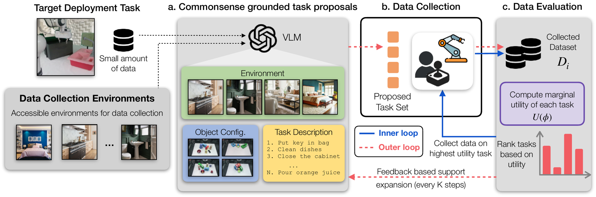
Overview of the GUILD pipeline. Given a limited-access deployment setting and a set of accessible data collection environments, GUILD uses VLM priors to propose candidate scenes, object placements and tasks. Collected trajectories are evaluated with predictive data attribution to estimate their influence on deployment-task performance. These scores guide subsequent collection (inner loop) and task proposals (outer loop), closing the loop.
We evaluate GUILD in two settings. For each target task, the deployment scene is held out: all new data must be collected in the other scenes, and only a small set of target demonstrations is available.
book-caddy, soup-butter-tray, bowl-ketchup-drawer) and collect data
with scripted pick-and-place policies in the remaining 16 scenes.
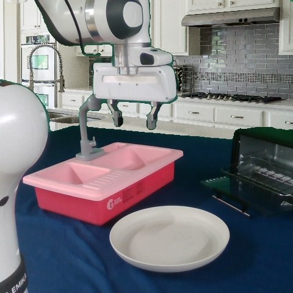
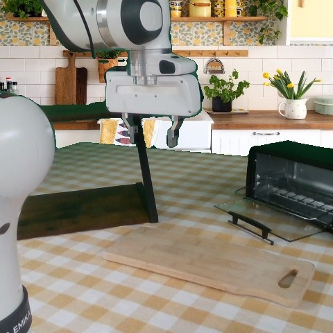
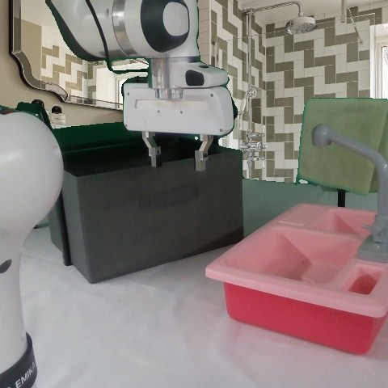
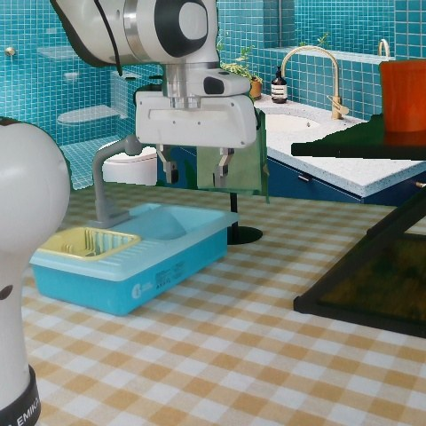
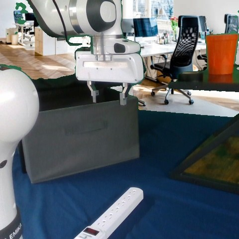
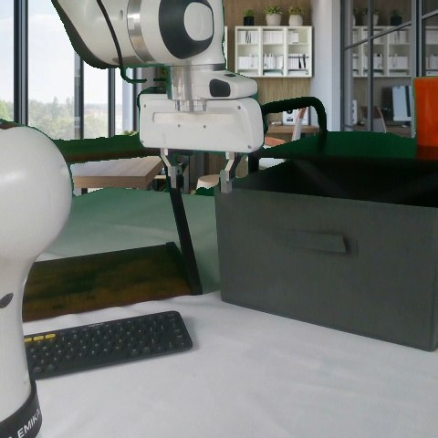
The six real-world data collection environments (robot camera view).
pink-cup-sinktowel-drawer-closebowl-pourlemon-drawer-closePolicy & training. We fine-tune a language-conditioned Octo policy from its pretrained checkpoint, co-training on the collected data and the target demonstrations with a 50/50 sampling mixture.
Baselines. All methods get the same collection budget.
On LIBERO, the figure below plots policy success against the number of collected trajectories. Random is far behind everything else, while VLM-Uniform is already a strong baseline, so VLM semantic priors alone provide a lot of signal for where to collect. Adding principled data evaluation helps further: both FSC and GUILD beat STRAP and the no-evaluation baselines, and GUILD matches or exceeds the strongest baseline across all tasks and budgets.
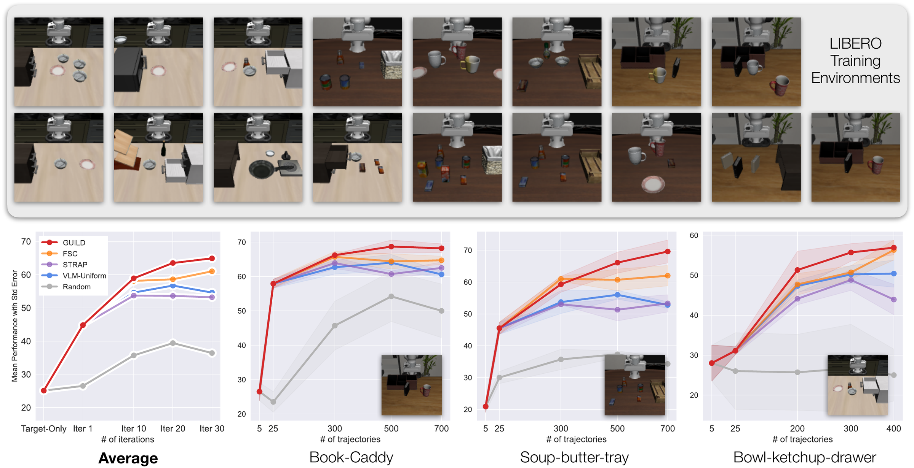
LIBERO guided data collection. For each method and task we run 3 data collection seeds. Each evaluation trains 5 policies and averages their performance over 100 rollouts. Shaded regions show the standard error across seeds.
We evaluate in two real-world settings:
Closed-world. To compare many methods without re-collecting data for each of them, we build an offline pool of 49 tasks across the six environments. Policies are evaluated over 20 real rollouts (solid bars below). The results mirror simulation: GUILD achieves the best performance under the same budget. It also outperforms All-Data, a policy trained on the entire pool including data from the target environment, which shows that targeted collection can beat indiscriminate scaling.
Open-world. This is the setting we ultimately care about, since GUILD is no longer limited to what has already been collected. Because every method needs its own newly collected real-world data, we compare GUILD against VLM-Uniform and two human experts (hatched bars).
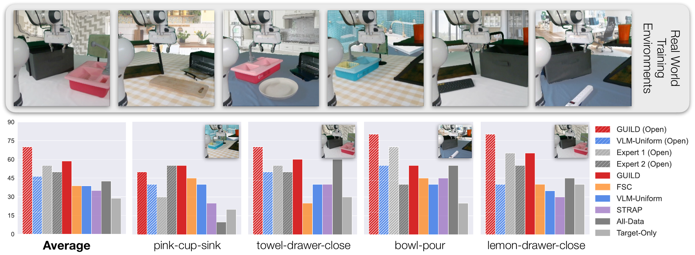
Real-world guided data collection. Hatched bars: open-world collection. Solid bars: closed-world selection from a fixed task pool. GUILD achieves the highest success under the same data budget.
Two trends stand out:
Humans are still the dominant way of deciding what robot data to collect, so we put GUILD head to head with them. In LIBERO we surveyed 8 roboticists (1 to 5+ years of experience), gave them the same information available to the GDC methods and asked them to propose tasks and split a fixed budget.
On average, humans fall short of GUILD, which suggests that attribution-based evaluation is a stronger signal than intuition. Interestingly, VLM-Uniform closely matches the average human: modern VLMs capture much of the commonsense reasoning experts use, which makes them a strong starting point for the GDC process.
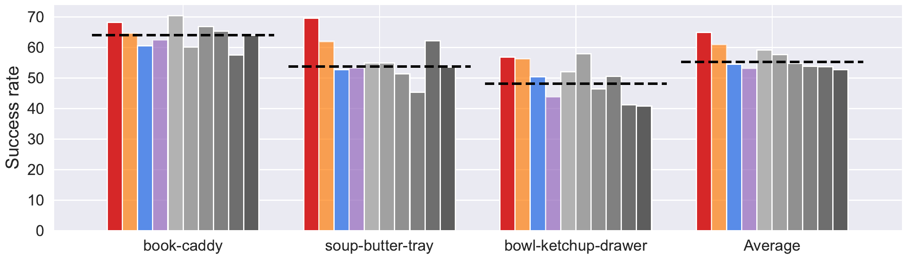
Human-guided data collection on LIBERO. Success rate per task and on average. Gray bars are individual human participants, and the dashed line is the human average.
Human performance also varies a lot across tasks: participants who do well on one task often do not do as well
on another. The same holds in the real world, where we compared against 2 experts with 4 to 5 years of robotics experience (see real world results from earlier). For example,
Expert 1 is strong on towel-drawer-close but weak on pink-cup-sink.
Individual experts may occasionally beat GUILD on a specific task, but GUILD
provides a reliable, systematic mechanism that does well across all of them.
Below we show the final data composition GUILD collected for each real-world target in the open-world setting. Each bar is one auxiliary task and its height is the number of trajectories collected for it. The color shows the outer-loop iteration in which the task was first proposed. GUILD consistently prioritizes tasks that share semantic and behavioral structure with the target, such as similar objects, receptacles or manipulation patterns, even when they come from a completely different room.
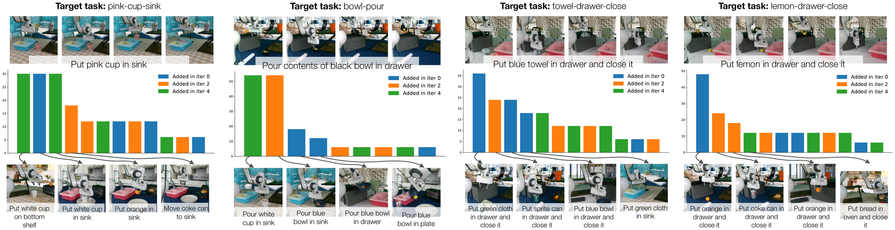
Real-world data composition. Top: target task. Middle: trajectories allocated per auxiliary task, colored by the iteration in which the task was introduced. Bottom: the highest-allocation auxiliary tasks.
Useful tasks are discovered throughout collection. The best tasks are not always in the initial proposal
set. For pink-cup-sink, one of the highest-allocation tasks only appears in a later support-expansion round,
and for bowl-pour the two largest allocations both come from tasks introduced after initialization.
Iterative support expansion matters.
The shape of a good dataset depends on the target. For bowl-pour and
lemon-drawer-close the budget is concentrated on a handful of tasks, while for pink-cup-sink
and towel-drawer-close it is spread across many. No fixed heuristic, whether uniform sampling or picking the single
top-ranked task, would get both right. This is why we treat data collection as an adaptive allocation problem.
Pick a target task to see the auxiliary tasks GUILD asked the teleoperator to collect.
Target task
Deployment scene held out. Every clip below was collected in the other environments.
Data collected by GUILD
We ablate key design choices on LIBERO (success rate of policies trained on the final dataset, mean ± std. error).
| Variant | book-caddy | soup-butter-tray | bowl-ketchup-drawer | Average |
|---|---|---|---|---|
| GUILD | 68.2 ± 1.3 | 69.6 ± 3.6 | 56.9 ± 1.8 | 64.9 |
| GUILD (soft-sampling) | 66.1 ± 0.5 | 63.2 ± 2.3 | 54.7 ± 4.5 | 61.3 |
| GUILD (no-feedback) | 65.5 ± 1.1 | 55.3 ± 3.9 | 56.9 ± 1.7 | 59.2 |
| GUILD (Gemini-2.5-Flash) | 67.2 ± 2.0 | 52.2 ± 1.5 | 63.8 ± 0.6 | 61.1 |
soup-butter-tray. VLMs can use attribution feedback to make better proposals.
bowl-ketchup-drawer, worse on soup-butter-tray) but stays competitive on average.
GUILD is not tied to a specific VLM, and better proposers should directly translate into better collection.
@inproceedings{dass2026guild,
title = {GUILD: Guided Iterative Data Collection for Imitation Learning},
author = {Dass, Shivin and Nguyen, Kevin and Yelandur, Rohan and Xu, Junhong and Mart{\'i}n-Mart{\'i}n, Roberto},
booktitle = {Conference on Robot Learning (CoRL)},
year = {2026}
}